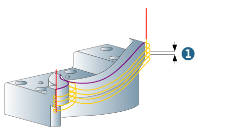
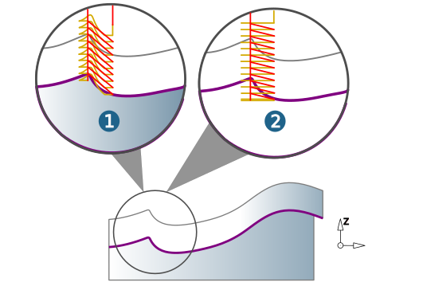
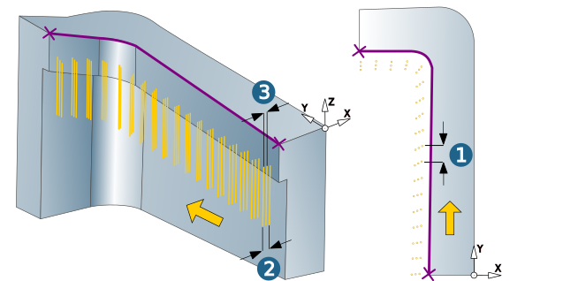
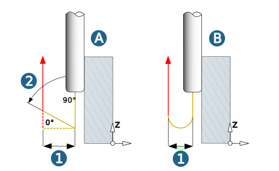

Parameters
Path compensation
Center path: hyperMILL calculates a toolpath that can be machined using the specified tool without collisions. Stock allowances in XY are taken into account.
Select this function if your controller does not offer the path compensation feature.
Note
The tool diameters must be adhered to exactly during machining. If tool diameters vary, the NC program has to be corrected.
(1) Contour (selected in hyperMILL).
(2) Center path (calculated by hyperMILL) corresponds to NC path.
 |
Compensated center path: Only available if enabled for the job list on the Setup dialog page. hyperMILL calculates a toolpath that can be machined using the specified tool without collisions, including the path compensation.
(1) Contour (selected in hyperMILL)
(2) Center path (calculated by hyperMILL) corresponds to NC path
(3) Center path (calculated by NC control with real tool diameter)
hyperMILL tool: D8 / R4
Real tool: D7.5 / R3.75
Tool data storage: D-0.5 / R-0.25
 |
Parameter – Swarf machining
Define the parameter if the Swarf machining method is enabled.
Allowance
Allowance XY (1): Remaining allowance in the X and Y direction for machining to the right or left of the contour.
Allowance (2): Remaining global allowance.
Additional options
Spring path: Enable to machine the entire defined contour, even if no more material will be cleared. Use Pass number to define how often the tool should move along the contour.
Infeed
Vertical stepdown (1): Z infeed to the next machining pass. The value of the last infeed is automatically adjusted to the machining depth and the allowance in Z.
|  |
Z-smoothing: In the case of insufficient contour quality (1), use this option to smooth the toolpath (2). (A) Z-smoothing not enabled, (B) Z-smoothing enabled
 |
Z-constant: Only available for the reference job machining strategy. Remaining rest material areas from a preceding roughing operation will be z-constant machined.
(1) Function not enabled, (2) Function enabled.
|  |
Horizontal infeed mode
Fixed step: The value defined under Lateral infeed area for the lateral infeed is retained. The value of the last infeed is automatically adjusted to the total infeed.
Fit step: The value defined under Lateral infeed area for the lateral infeed is automatically adjusted in such a way that all infeeds are the same. This is done while taking account of the total infeed.
Lateral infeed area
Total infeed (1): Total infeed in the XY plane.
Lateral infeed (2): Infeed in the XY plane.
Finish path: Available for the Fit step horizontal infeed mode. Additional final finish path in the XY plane. The lateral infeed will be adjusted accordingly.
 |
Parameter – Plunge machining
Define the parameter if the Plunge machining method is enabled.
Allowance
Allowance XY (1): Remaining allowance in the X and Y direction for machining to the right or left of the contour.
Allowance (2): Remaining global allowance.
Lateral infeed area
Constant side stepover (1): Constant infeed in the XY plane over the entire contour.
Total infeed (2): Total infeed in the XY plane.
Constant side stepover (3): Infeed in the XY plane.
|  |
Retract movement
The retract movement is performed in a linear (A) or circular (B) manner.
Retract distance: (1) Distance of the retract movement from the plunging movement
Axial retract angle: (2) Angle of the retract movement. Permissible values are between 0 and 90°. Only available for linear retract movements.
|  |
Retract mode
The retract mode defines the Z level where the system executes horizontal infeed movements. The mode set is valid for all machining directions (incl. approach, retract and return movement macros) and for the profiles machined with them. Exception: Machining in zigzag mode without return macro.
Clearance distance (1): all retract and infeed movements are executed via the clearance distance. Starting and end positions of an infeed movement in rapid are displaced in Z direction in order to guarantee a collision-free linear infeed movement. The clearance distance is added to these positions.
Clearance plane (2): all retract and infeed movements are executed via the clearance plane.
 |
Safety
Clearance plane and clearance distance apply in the direction of the Z axis of the current frame.
 |
Clearance plane (1): Plane for rapid tool movements. Specification in absolute dimensions Define the clearance plane by right-clicking on the icon. Select a point and confirm the selection. |
Warning
Traversing movements on the clearance plane are not checked with regard to collisions. Therefore, this plane must be placed at a sufficient distance above the surface of the workpiece.
Clearance distance (2): Distance to the current toolpath to be milled. Above the clearance distance, infeed takes place as rapid in the Z direction (A); below the clearance distance infeed takes place at the Z feedrate (B).
(3) Top, (4) Bottom
 |